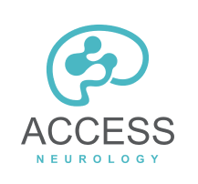

Preserving Vision, Easing Headaches: Timely Neurological Care for Idiopathic Intracranial Hypertension
The Right Care - Right Away - Can Make all the Difference
Rapid
Access
We provide convenient and early access to specialised neurology care when you need it.
Interventional Neurology
As interventional neurologists at a large tertiary institution, we have the ability to perform cerebral venography and venous sinus stenting where necessary at no delay.
Dedicated Specialty Training
We have excellent relationships with our colleagues in neurosurgery and ophthalmology. We’ll ensure you get to see the best person to provide you with specialised care to complement the care we provide.
What is Idiopathic Intracranial Hypertension
Idiopathic intracranial hypertension (IIH) is a disorder related to high pressure in the head which causes many of the symptoms . It is also sometimes called pseudotumor cerebri or benign intracranial hypertension. The fluid that surrounds the spinal cord and brain is called cerebrospinal fluid or CSF. If too much fluid is made or not enough is re-absorbed, CSF can build up.
Helping Relieve Symptoms From The Root Cause
We identify the underlying cause of your headaches or migraines. Our specialists provide a precise examination to find, and treat, the cause of your symptoms.
Whether you experience acute or chronic headaches, our clinicians will provide a precise examination to find the cause of your symptoms and find a suitable treatment.

How We Can Help
Migraine treatment is aimed at stopping symptoms and preventing future attacks. Your treatment choices depend on the frequency and severity of your headaches, whether you have nausea and vomiting with your headaches, how disabling your headaches are, and other medical conditions you have. Many medications have been designed to treat migraines. Medications used to combat migraines fall into two broad categories:
Pain-relieving medications
It is very common for these medicines to be used incorrectly which may limit their effectiveness. We work with you to ensure you get the most benefit out of the medicines we use.
Preventive medications
There are several types of daily medicines and supplements that we can recommend. Some newer medicines such as CGRP monoclonal antibodies and Botox can be used quite effectively where daily medicines fall short.
Why Choose CURA Medical Specialists
Both Dr Winters and Dr Ang are appointed staff specialist neurologists at Royal Prince Alfred Hospital and are experts in stroke, TIA, and related neurovascular disorders. Migraine is a common neurological presentation. In some instances, migraine can present with stroke-like symptoms that do not cause any long-lasting harm and almost always recover completely. Dr Winters and Dr Ang frequently treat migraine patients in their practice, and both are proud of the success they have achieved with their patients.
Dr Winters and Dr Ang are both remarked as clinicians who are compassionate and are willing to spend the necessary time with patients. Both doctors believe in a comprehensive assessment and educating patients about their diagnosis and treatment. Doing so empowers patients, alleviates anxiety, and reduces uncertainty, especially as migraine treatment often takes some time before it is beneficial.
Newer treatments like Botox and CGRP monoclonal antibodies are very effective methods of reducing migraine frequency. Both treatment modalities are offered.
Meet Our Specialists
Dr Hugh Stephen Winters
MBChB (Auckland) FRACP (Neurology) CCINR (Neurology)
Dr. Winters is a fellow of the Royal Australasian college of physicians with specialist training in neurology with four additional years of training in interventional neurology which included a year of fellowship in Interventional Neuroradiology at the Erlanger Medical Center in Tennessee.
As a specialist in interventional neurology, Dr. Winters is highly trained in the use of minimally invasive, image-guided techniques to diagnose and treat diseases such as stroke, idiopathic intracranial hypertension, and aneurysms.
He is able to perform minimally invasive corticosteroids spinal injections for neck and lower back pain as well.
Dr. Winters is also specialist in general neurology.

Dr Timothy Ang
MBBS, FRACP (Neurology), Head of Committee for CCINR
Dr. Timothy Ang is a neurologist and interventionist at Royal Prince Alfred Hospital, Sydney. Dr. Ang uses cutting-edge medical imaging tests to diagnose and treat neurovascular and neurological diseases.
When it comes to strokes, every second counts. That’s why for Dr Ang, his research interests revolve around streamlining and improving access to hyperacute stroke therapies using Telestroke tech and retrieval networking, where doctors can perform real-time and remote diagnosis and treatment to a stroke patient, which dramatically speeds up the delivery of care.
Dr Ang's interests include idiopathic intracranial hypertension, headache, migraine, aneurysms and he is also a specialist in general neurology.
Consultation
Get a Referral from Your GP
To arrange a consultation with our neurologists you will need a valid referral from a general practitioner or another specialist.
Contact Us
Complete the form below to request a consultation. You can also email us, call or live chat.
Consultation
The specialist will take a detailed and thorough history about your neurological problem/s, perform a comprehensive physical examination and examine test results that are already available.
Care Co-ordination
Our secretaries will arrange the tests for you in advance before you leave. This is so that we can arrange for a timely follow-up after the tests and the results are available for review.
Consultation Cost
| Initial consultation (45-60 min) |
260$ |
| Follow-up (30 min) |
160$ |
* We process your Medicare claims independent of your payment on your behalf to help reduce the immediate out of pocket costs of your consultation. A valid referral has to be current and come from a general practitioner or another specialist.
Clinical Services Affiliation
- 
Make an Appointment
A valid referral has to be current and come from a general practitioner or another specialist.